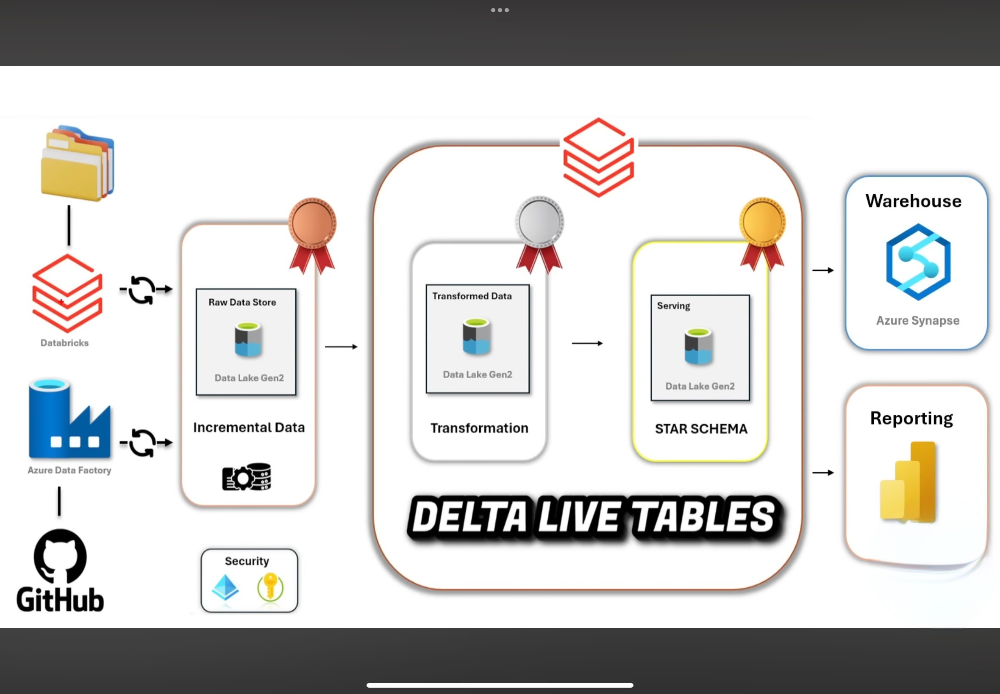
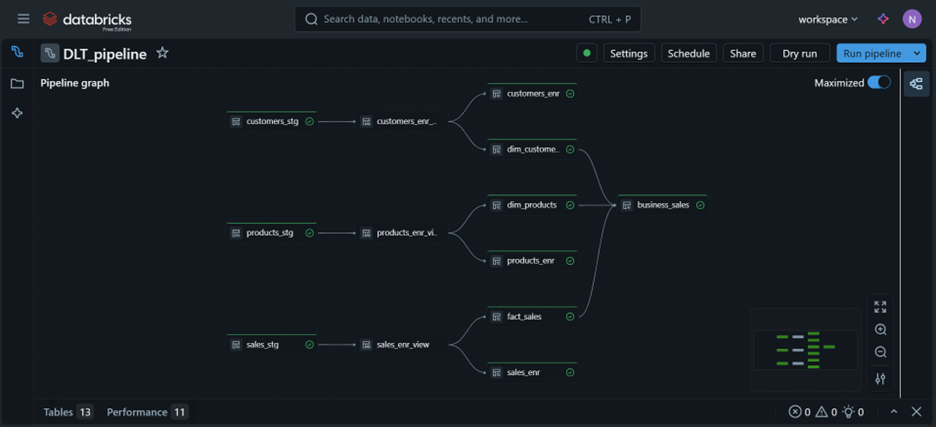
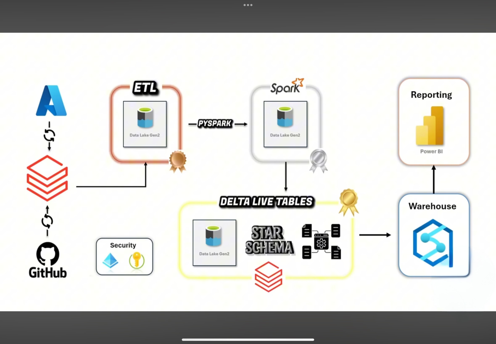
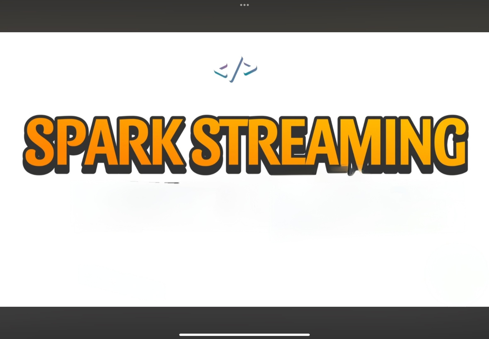
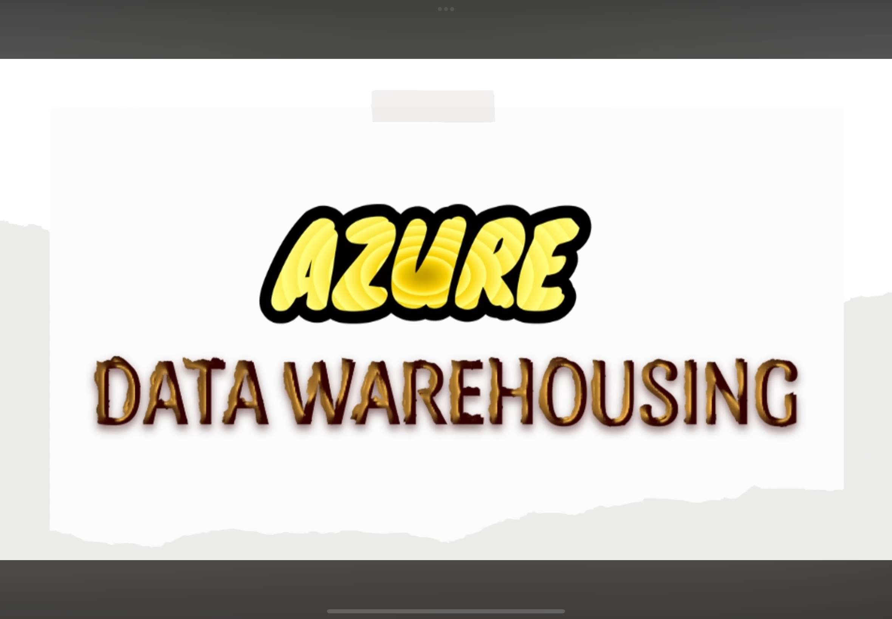
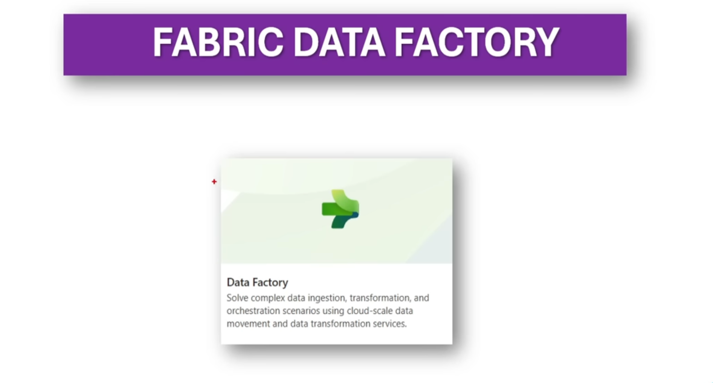
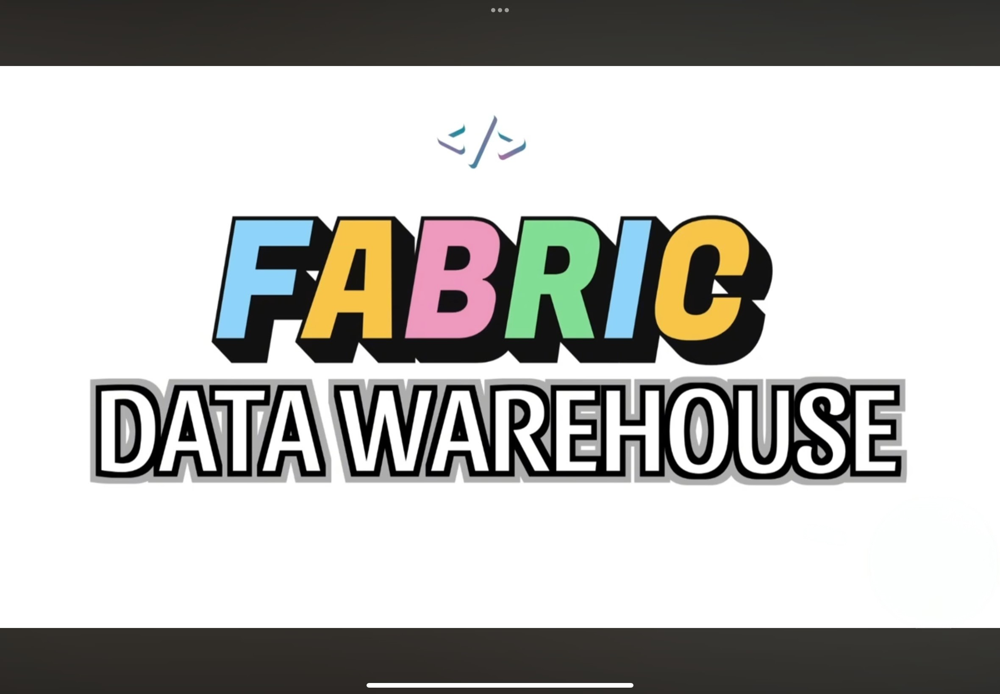

April, 2025
The objective of this project is to build an end-to-end data engineering project with Azure services following
medallion architecture, which involves data ingestion data factory pipelines with parameterization and using data bricks
covering incremental loading using autoloader serving as bronze layer with unity catalog. Then silver layer contains the
transformations using pyspark function and workflows activities in notebooks with dynamic capabilities for data enrichment.
In gold layer, integrating delta live tables ETL workflow helps in serving the data warehouse for analytical reporting.


The objective of this project is to design and implement a scalable,
cloud-based data engineering pipeline for an e-commerce platform using Azure services.
The pipeline will enable efficient data ingestion, transformation, enrichment by integrating multiple
data sources (HTTP, SQL, MongoDB), ensuring data quality, and providing actionable insights through advanced analytics
and visualization tools.

Databricks Declarative Pipelines (also known as Delta Live Tables) from scratch - Streaming Tables, Materialized Views,
Append Flows, AUTOCDC, Slowly Changing Dimensions, PySpark, Data Monitoring, Medallion Architecture,and Aggregated Business View

The objective of this project is to build an end-to-end data engineering project with Databricks community edition following medallion architecture,
which involves data ingestion from GitHub(https) and ADLSGen2 covering incremental loading using autoloader serving as bronze layer with unity catalog.
Then silver layer contains the transformations using pyspark function, leveraging oops concept for data enrichment and functions in unity catalog for reusability.
In gold layer, Integrating slowly changing dimension types 1and 2 with star schema and building delta live tables. Finally serving the data to warehouse for
analytical reporting.

The objective of this project is to design and implement a scalable, cloud-based data streaming with spark using Databricks community edition.
It involves Big Data with PySpark Streaming from scratch, JSON data handling and flatening, PySpark transformations, triggers, output modes,
foreachBatch to enhance dynamic capabilities, tumbling/sliding windows, sessions, watermarks.

The objective of this project is to design and implement a scalable, cloud-based data integration pipeline using Azure services.
The pipeline will enable efficient data ingestion, transformation, enrichment by integrating data sources (HTTP-GitHub and ADLSGen2),
ensuring data quality with implementation of triggers and real world applications.

The objective of this project is to build an end-to-end data warehousing project with Azure synapse analytics following medallion architecture,
which involves ETL vs ELT, Incremental loading and Integrate pipelines with synapse, Data flows for transformations, openrowset function, CETAS
and dimensional data model aka star schema as gold layer.

The objective of this project is to design and implement a scalable, cloud-based data engineering pipeline for an e-commerce platform using Azure services.
The pipeline will enable efficient data ingestion, transformation, enrichment by integrating data sources (HTTP-GitHub and ADLSGen2), ensuring data quality,
and providing actionable insights through advanced analytics and visualization tools.

The objective of this project is to design and implement a scalable, cloud-based data engineering pipeline for entertainment platform (Netflix data)
using Microsoft Fabric services. The pipelines will enable efficient data ingestion, transformation by integrating data from Source (One Lake) to
Data destination (Lakehouse), ensuring data quality by performing efficient data pipeline orchestration strategies with CI/CD.

The objective of this project is to design and implement a scalable, cloud-based data analytics using Microsoft Fabric services.
It involves from data loading using Copy Into command and CTAS, stored procedures, big data analytics, dimensional data modelling with star schema
of facts and dimensions, to CTEs, subqueries, the Visual Query Editor, covering real world applications and Power BI report.